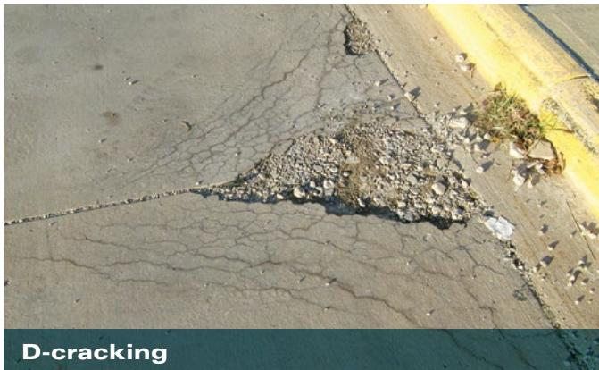
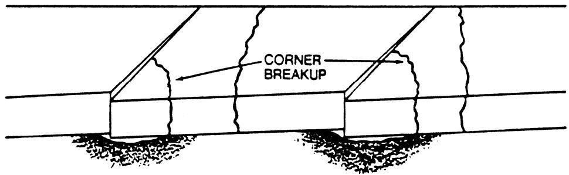
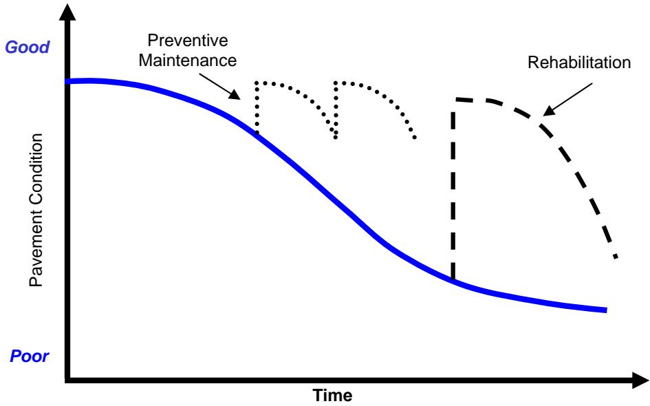
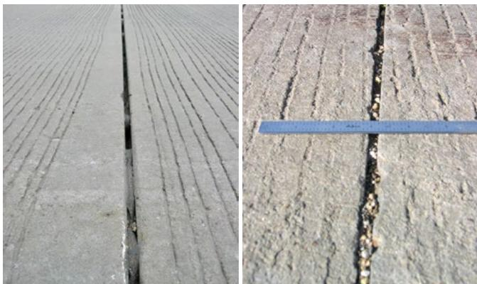
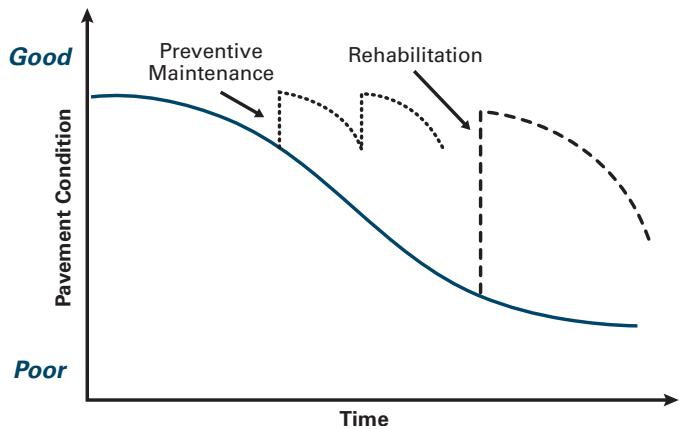

Concrete Pavement Preservation Practices
Concrete pavement preservation practices are planned, non‑structural interventions applied to existing concrete roadways that exhibit early‑stage deterioration such as loss of ride quality, spalling, cracking, faulting or water infiltration [2][3][4][5]. Their purpose is to maintain smoothness, safety and serviceability by correcting localized distress, reducing moisture intrusion, improving slab support and load‑transfer capability, thereby arresting further decay while the pavement remains in relatively good condition (PCR 60–100) [1][2][4][5]. By employing cost‑effective treatments—such as patching, joint sealing, diamond grinding or dowel bar retrofitting—that are designed for the existing slab type and installed with proven construction practices, preservation extends the pavement’s useful life without adding structural capacity [2][4][5].
Sources (5)
Purpose and treatment objectives
The guides agree that concrete pavement preservation practices are directed at “early‑stage deterioration of concrete roadways that manifests as a gradual loss of ride quality and serviceability”. Across sources the treatments target “surface‑defect problems that appear on existing concrete slabs”, aiming to “Correct localized distress (e.g., spalling, cracking, and faulting)”. In addition, the guides identify “material‑related cracking, specifically D‑cracking and the chemical deterioration known as alkali‑silica reaction (ASR) distress” as a condition that preservation treatments seek to remediate. By addressing these early functional distresses, preservation seeks to maintain smoothness, safety, and overall serviceability before more severe structural failures develop. [2][3][4][5]
The following figure illustrates common concrete pavement distress types that preservation practices aim to address.

D-cracking and spalling on a concrete pavement surface near the joint. [4]The image displays a section of concrete pavement exhibiting extensive map cracking that converges into a large area of material loss, or spalling, along the edge of the slab.
[2] — Ch. 5 (p. 55), Ch. 6 (pp. 66–67), Ch. 11 (p. 110); [3] — Ch. 4 (pp. 94–318), Ch. 13 (p. 56), Ch. 18 (p. 401); [4] — Ch. 1 (pp. 21–22), Ch. 2 (pp. 27–34), Ch. 6 (p. 154), Ch. 12 (p. 267); [5] — Ch. 1 (pp. 16–17), Ch. 2 (pp. 20–21)
The objective of concrete‑pavement preservation practices, as described across the guides, is to keep existing pavements performing acceptably for as long as possible. This is achieved through “the process of maintaining a structure in its present condition and arresting further deterioration,” which embodies both prevention of new damage—“Prevention of premature pavement distresses”—and mitigation of ongoing decay. When distress does appear, preservation calls for “Correct localized distress” to restore load transfer, smoothness and water control. The overarching aim is therefore to extend the pavement’s useful life: concrete pavement preservation is a strategy of extending concrete pavement service life for as long as possible by arresting, greatly diminishing, or avoiding pavement deterioration processes. [1][2][4][5]
The following figure illustrates this concept by depicting the concrete pavement life cycle.
 The concrete pavement life cycle (Van Dam and Taylor 2009). [2]
The concrete pavement life cycle (Van Dam and Taylor 2009). [2]
The figure displays a cyclical diagram representing the concrete pavement life cycle, consisting of six sequential stages: Design, Materials Processing, Construction, Operations, Preservation and Rehabilitation, and Reconstruction and Recycling.
[1] — Ch. 10 (p. 326); [2] — Ch. 5 (p. 55), Ch. 6 (pp. 66–67), Ch. 11 (p. 110); [4] — Ch. 1 (pp. 21–22), Ch. 2 (pp. 27–34), Ch. 12 (p. 267); [5] — Ch. 1 (pp. 16–17), Ch. 2 (pp. 20–21)
Distress characterization and causes
The distress targeted by concrete‑pavement preservation practices occurs on the surface of the concrete roadway, where condition begins to decline slightly as the slab ages under traffic. If no treatment is applied, this minor loss quickly accelerates, leading to a rapid drop in performance that eventually levels off at a poor condition requiring rehabilitation or reconstruction. The severity therefore ranges from early‑stage smoothness loss to severe roughness and structural deficiency, with safety and operational impacts that include lower fuel efficiency, higher crash risk and increased noise for road users. [2]
[2] — Ch. 11 (p. 110)
The guides agree that concrete‑pavement distress originates from a combination of age‑related material loss, traffic loading, and moisture intrusion. As the pavement ages, “pavement condition slightly decreases with time as the pavement ages and is subjected to traffic,” and after the early service period “performance decreases at an increasing rate” if no action is taken. Simultaneously, water can penetrate the structure; therefore preservation actions stress the need to “Reduce water infiltration into the pavement structure” and also “Reduce water infiltration in the pavement structure.” When moisture enters joints or cracks it can bring incompressible particles, so preventing this intrusion—“Prevent the intrusion of incompressibles into joints or cracks”—is essential. The resulting loss of support and load‑transfer capacity is highlighted by the repeated recommendation to “Improve slab support conditions” and “Improve load transfer capabilities,” which together address the weakening of slab support and the diminished ability to distribute traffic stresses. If these mechanisms are not mitigated, localized failures such as spalling, cracking, and faulting—summarized in “Correct localized distress (e.g., spalling, cracking, and faulting)”—accelerate the overall deterioration. [2][4][5]
The following figure illustrates these progressive degradation mechanisms.

Typical stages in the deterioration of a concrete pavement (Darter, Barenberg, and Yrjanson 1985). [5]The figure illustrates the progression of corner breakup on a concrete slab, showing how material loss at the edges leads to voids beneath the pavement.
[2] — Ch. 6 (pp. 66–67), Ch. 11 (p. 110); [4] — Ch. 1 (pp. 21–22); [5] — Ch. 1 (pp. 16–17)
Applicability and treatment selection
Concrete pavement preservation (preventive‑maintenance) is appropriate when the existing concrete slab is still in relatively good condition—typically a Pavement Condition Rating of about 60 to 100—and retains enough remaining service life to benefit from low‑cost treatments. It can be applied even on heavily trafficked lanes, provided that the maintenance detail avoids creating elevation differences between adjacent lanes. The source does not specify particular environmental or site constraints, so preservation is assumed suitable under normal climatic and subgrade conditions as long as the pavement’s structural integrity remains adequate. [2]
The following figure illustrates the typical performance curve that indicates the ideal timing for applying these preservation treatments.
 Typical pavement performance curve showing ideal times for the application of pavement preservation, rehabilitation, and reconstruction. [2]
Typical pavement performance curve showing ideal times for the application of pavement preservation, rehabilitation, and reconstruction. [2]
The figure displays a graph with ‘Pavement Condition’ on the vertical axis ranging from Good to Poor and ‘Time’ on the horizontal axis. A curve illustrates that pavement condition slightly decreases initially before decreasing at an increasing rate until it levels off in a poor state. The graph identifies specific windows for ‘Preventive Maintenance’ while the pavement remains in good condition, as well as later interventions labeled ‘Rehabilitation’ and ‘Reconstruction’.
[2] — Ch. 6 (pp. 66–67)
‘Preventive‑maintenance preservation treatments become unsuitable once the concrete slab is no longer in relatively good condition with ample remaining life’; generally this occurs when the pavement condition rating falls below about a PCR of 60 and especially under 50. At that point, ‘when distress, roughness, or loss of structural capacity reaches this threshold, rehabilitation—adding thickness or an overlay—is the appropriate next step’, and if the condition deteriorates further (PCR under roughly 40) ‘reconstruction is the only viable option’.
‘Preservation treatments become unsuitable when the concrete pavement’s distress exceeds what localized corrective actions can address—such as extensive spalling, cracking, faulting or loss of structural support’; likewise, ‘or when existing design conditions and constraints prevent an effective preservation design; in those cases agencies must resort to more invasive rehabilitation, full‑depth repairs, overlays, or reconstruction’.
‘Preservation is only appropriate if it is applied to the right pavement at the right time, designed for the current conditions, and installed using proven construction practices’. When these criteria are not met, agencies should shift to alternative strategies.
‘When a concrete pavement has deteriorated beyond the point where it can be considered in relatively good condition or still possesses significant remaining service life, preservation treatments are no longer appropriate.’ In such cases—e.g., severe spalling of joints, loss of structural capacity, or functional obsolescence—the agency should move to corrective maintenance (such as partial‑depth repairs or isolated slab replacement), minor rehabilitation that adds thickness, or full reconstruction if the pavement has failed. The choice among these alternatives is driven by the severity of distress and whether the existing structure can still be restored without increasing its structural capacity. [2][4][5]
The following figure illustrates the distinctions between these approaches by defining pavement preservation, rehabilitation, and reconstruction.
 Schematic representation of pavement condition over time showing the timing and scope of preventive maintenance, rehabilitation, reconstruction, and corrective maintenance. [5]
Schematic representation of pavement condition over time showing the timing and scope of preventive maintenance, rehabilitation, reconstruction, and corrective maintenance. [5]
The figure displays a graph plotting Pavement Condition on the vertical axis against Time on the horizontal axis, illustrating how pavement deteriorates from Good to Poor condition over time. A shaded region labeled “Pavement Preservation window” highlights a specific timeframe where preventive maintenance is applied while the pavement remains in relatively good condition, before significant deterioration occurs. The diagram distinguishes between different intervention strategies based on timing: “Reconstruction” and “Rehabilitation” are shown occurring later when the pavement has deteriorated significantly, while “Corrective Maintenance” is indicated as a reactive measure.
[2] — Ch. 6 (pp. 66–67), Ch. 11 (p. 110); [4] — Ch. 1 (pp. 21–22); [5] — Ch. 2 (pp. 20–21)
Condition assessment and timing
Preservation treatments are applied while the concrete pavement is still in generally good condition—typically reflected by a Pavement Condition Rating of about 60 to 100 and with substantial remaining service life—and as soon as early‑stage, localized distress (such as spalling, cracking or faulting) or water infiltration that threatens slab support, load transfer, or ride quality becomes evident. Acting at this stage keeps the surface smooth, extends useful performance, and avoids more costly rehabilitation later. [2][4][5]
The following figure illustrates the general applicability of these preservation strategies relative to broader rehabilitation and reconstruction activities.
 General applicability of pavement preservation, rehabilitation, and reconstruction activities over time. [4]
General applicability of pavement preservation, rehabilitation, and reconstruction activities over time. [4]
The figure displays a curve plotting pavement condition against time, illustrating the lifecycle from excellent to failed states. A bracket labeled “Pavement Preservation” spans the initial phase of the curve where the pavement remains in good to very good condition. This visualizes the concept that preservation is a planned intervention applied early to arrest decay while the pavement remains relatively sound, distinct from later rehabilitation or reconstruction phases shown at the bottom right of the timeline.
[2] — Ch. 6 (pp. 66–67), Ch. 11 (p. 110); [4] — Ch. 1 (pp. 21–22), Ch. 2 (pp. 28–30); [5] — Ch. 2 (pp. 20–21)
Materials and repair details
The preservation toolkit for concrete pavements consists of a defined set of materials, products, configurations, and repair details. Across the guides, preventive‑maintenance treatments are described as “a planned strategy employing cost‑effective treatments (e.g., patching, joint sealing, diamond grinding, and so on)”. Required materials include curing compounds applied with “proper application of curing compound”, patching material for localized cracks, sealants for expansion joints, and specialized grinding equipment for surface renewal. The guides also call for slab stabilization, partial‑depth repairs or full‑depth repairs, retrofitted edge drains, and load‑transfer restoration through dowel bar retrofitting. Surface finishing options include “diamond grinding and grooving” as well as resealing of joints and cracks (“joint resealing and crack sealing”). When structural capacity has declined, rehabilitation adds thickness by placing an additional concrete overlay; the guidance notes that “pavement rehabilitation adds some structural capacity, usually through the application of additional pavement thickness in the form of an overlay”, which follows the existing slab geometry without altering joint spacing. Together these materials, dimensions, and configurations constitute the core preservation toolkit. [2][5]
[2] — Ch. 5 (p. 55), Ch. 6 (pp. 66–67), Ch. 11 (p. 110); [5] — Ch. 2 (pp. 20–21)
The guides concur that preservation treatments must be “must be (1) applied to the right pavement at the right time, (2) effectively designed for the existing design conditions and prevailing design constraints, and (3) properly constructed or installed using proven construction practices and procedures.” Success also depends on matching the treatment to the slab’s current state—“including localized distress such as spalling, cracking, faulting, slab support deficiencies, load‑transfer problems, water infiltration, and rideability concerns”—and selecting a material that provides durability. Compatibility with the pavement type is required; the treatments must suit the “existing pavement type—jointed plain (JPCP), jointed reinforced (JRCP) or continuously reinforced (CRCP)—.” Preventive‑maintenance actions are only viable when “preventive maintenance is only applicable when the pavement is in relatively good condition and has significant remaining life,” because poorer‑condition slabs lose restored performance more quickly. Moreover, “Key factors influencing the impact of preservation treatments are applying them to the appropriate pavement at the appropriate time, using durable materials, and adhering to proven construction practices,” and “Included among these factors are the existing pavement conditions and the traffic and climatic characteristics of the project, which influence treatment and pavement performance.” [2][4][5]
The following figure illustrates how treatment costs vary across different pavement condition ratings.
 Comparison of treatment costs at different pavement condition ratings (PCRs) [2]
Comparison of treatment costs at different pavement condition ratings (PCRs) [2]
The figure illustrates the relationship between pavement age and cost-effectiveness by plotting a downward-sloping curve across four distinct PCR bands. It shows that spending $1.00 to maintain a good pavement (PCR 60 to 100) is equivalent to spending significantly more on deteriorated pavements, with costs jumping to $48.00 at a PCR less than 40. This cost escalation demonstrates the economic rationale for applying preventive maintenance treatments while the pavement remains in relatively good condition.
[2] — Ch. 6 (pp. 66–67), Ch. 11 (p. 110); [4] — Ch. 1 (pp. 21–22), Ch. 2 (p. 34), Ch. 12 (p. 267); [5] — Ch. 1 (pp. 16–17), Ch. 2 (pp. 20–21)
Treatment procedures
The guides agree that successful implementation of concrete‑pavement preservation depends on appropriate equipment and a disciplined sequence, while also recognizing that timing influences traffic impacts. First, accurate condition assessment requires “new pavement evaluation equipment, technologies, and protocols.” Second, treatments must be applied to the correct pavement at the right time, being “effectively designed for the existing design conditions and prevailing design constraints” and “properly constructed or installed using proven construction practices and procedures.” Although specific environmental windows are not detailed, the timing and quality of application affect work‑zone management; a “proper application of curing compound” can “reduce work‑zone‑related traffic delays,” indicating that traffic restrictions are tied to when and how preservation treatments are performed. [2][4]
[2] — Ch. 5 (p. 55); [4] — Ch. 1 (pp. 21–22)
Quality and workmanship
A satisfactory concrete‑pavement preservation practice meets three core acceptance criteria that are consistently identified across the guides. First, the treatment must be “applied to the right pavement at the right time” – i.e., to a pavement that is a good candidate and still within a favorable condition range (“PCR 60 to 100”) indicating ample remaining life; once the Pavement Condition Rating falls into lower ranges such as “PCR of 50 to 60” the cost‑effectiveness declines, and below about “PCR less than 40” rehabilitation or reconstruction becomes necessary. Second, the preservation design must be (2) effectively designed for the existing design conditions and prevailing design constraints, aligning with slab support, load‑transfer capability, joint configuration, and material quality. Third, the treatment must be (3) properly constructed or installed using proven construction practices and procedures and subsequently maintained throughout its service life – “properly designed, properly constructed, and properly maintained throughout their service lives” and “treatments must be placed on pavements that are good candidates for preservation”.
When these criteria are satisfied, the treatment should demonstrate measurable indicators of success: a demonstrable reduction in water infiltration (“Reduce water infiltration in the pavement structure.”), prevention of incompressible intrusion into joints or cracks, correction of localized distress, improvement of slab support and load‑transfer capability, lower surface roughness, enhanced friction, and at least a small increase in the pavement condition rating after treatment while retaining smoothness. These outcomes extend service life without premature reconstruction and provide improved safety, reduced traffic disruption, cost savings, and sustainability. [2][4][5]
[2] — Ch. 6 (pp. 66–67); [4] — Ch. 1 (pp. 21–22), Ch. 2 (pp. 28–30); [5] — Ch. 1 (pp. 16–17)
Performance and service life
The guides describe concrete pavement preservation as a set of planned, non‑structural interventions that are applied while the surface is still in good shape. “preventive maintenance is a planned strategy employing cost‑effective treatments (e.g., patching, joint sealing, diamond grinding, and so on) that extend pavement life without increasing structural capacity.” When these treatments are timed correctly and installed with proven methods they correct localized distress, reduce water infiltration, prevent intrusion of incompressibles into joints or cracks, and improve slab support and load‑transfer capability. By doing so the pavement retains smoothness, adequate friction, and low noise levels, which translates to safer travel and lower vehicle operating costs. “Concrete pavement preservation is a strategy of extending concrete pavement service life for as long as possible by arresting, greatly diminishing, or avoiding pavement deterioration processes.” Because the rate of decay is slowed, durability is enhanced and the expected service life is prolonged. The overall effect is to “preserves the system, retards future deterioration, and maintains or improves the functional condition of the system (without significantly increasing the structural capacity).” If condition falls below the point where preservation is effective, rehabilitation provides a larger boost: “Pavement rehabilitation adds some structural capacity, usually through the application of additional pavement thickness in the form of an overlay.” [2][4][5]
The following figure illustrates the typical effects of these preventive maintenance and rehabilitation strategies on overall pavement performance.

Illustration of typical effects of preventive maintenance and rehabilitation on pavement performance. [5]The figure plots Pavement Condition against Time, showing a solid blue curve that represents the natural deterioration of a pavement from Good to Poor condition. Preventive maintenance is depicted as dotted lines that provide small, temporary boosts in condition while the pavement remains relatively good, whereas rehabilitation is shown as a dashed line providing a larger recovery when the pavement has deteriorated significantly.
[2] — Ch. 6 (pp. 66–67), Ch. 11 (p. 110); [4] — Ch. 1 (pp. 21–22), Ch. 2 (pp. 27–34), Ch. 12 (p. 267); [5] — Ch. 1 (pp. 16–17), Ch. 2 (pp. 20–21)
Concrete pavements commonly develop localized distresses such as spalling, cracking, faulting, water infiltration, and intrusion of incompressible material into joints or cracks; these problems reduce smoothness, load transfer, friction, and overall ride quality. Their occurrence is strongly tied to whether preservation treatments are applied at the appropriate time, designed for the existing pavement conditions, and installed with proven construction practices. When any of those three prerequisites—right pavement‑at‑right time, proper design, correct installation—are missed, the intended treatment may fail or the distress can reappear, shortening service life. [4]
The following figure illustrates common distresses such as joint spalling and blowup that result when preservation practices are not properly implemented.

Examples of joint sealant failures in concrete pavement. [4]The figure displays two examples of distress at a longitudinal joint on a grooved concrete surface: the left image shows a wide gap with missing and debonded sealant, while the right image shows a joint filled with debris and incompressible materials.
[4] — Ch. 1 (pp. 21–22)
Monitoring and follow-up
The guides agree that once a concrete pavement ceases to be in relatively good condition—typically reflected by a Pavement Condition Rating dropping from the PCR 60‑100 “good” band toward the PCR 50‑60 moderate band—the rate of performance loss accelerates, indicating increasing distress, roughness, or loss of structural capacity. At this stage preventive maintenance is no longer effective and the shift into the lower condition window signals that additional treatment—such as repair or a rehabilitation overlay to restore structural capacity—is required. The guides also note that when observable deficiencies emerge that compromise safety or efficient operation—such as severe joint spalling, loss of load‑transfer capacity, or other distress—the preservation effort is insufficient and corrective maintenance, repair, or full rehabilitation must be considered. [2][5]
The following figure illustrates how preventive maintenance and rehabilitation interventions affect concrete pavement condition over time.

Illustration of typical impacts of preventive maintenance and rehabilitation on concrete pavement condition (Smith, Hoerner, and Peshkin 2008) [2]The figure displays a graph plotting Pavement Condition against Time, showing a continuous decline in the solid blue line representing natural deterioration. Dotted lines illustrate how Preventive Maintenance interventions provide temporary recovery of condition while the pavement remains relatively good, whereas Rehabilitation is applied later to restore structural capacity after significant decay has occurred.
[2] — Ch. 6 (pp. 66–67), Ch. 11 (p. 110); [5] — Ch. 2 (pp. 20–21)